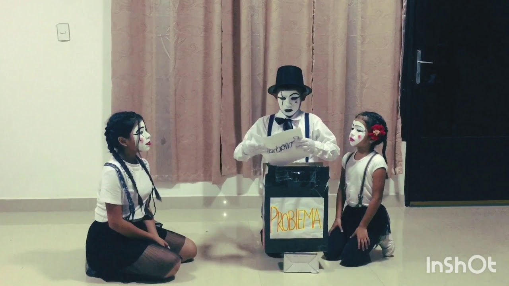
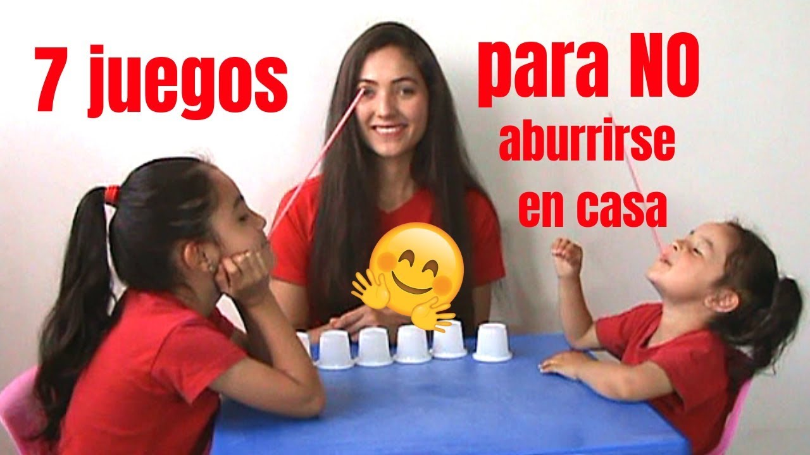
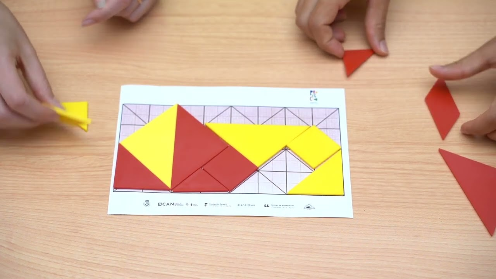
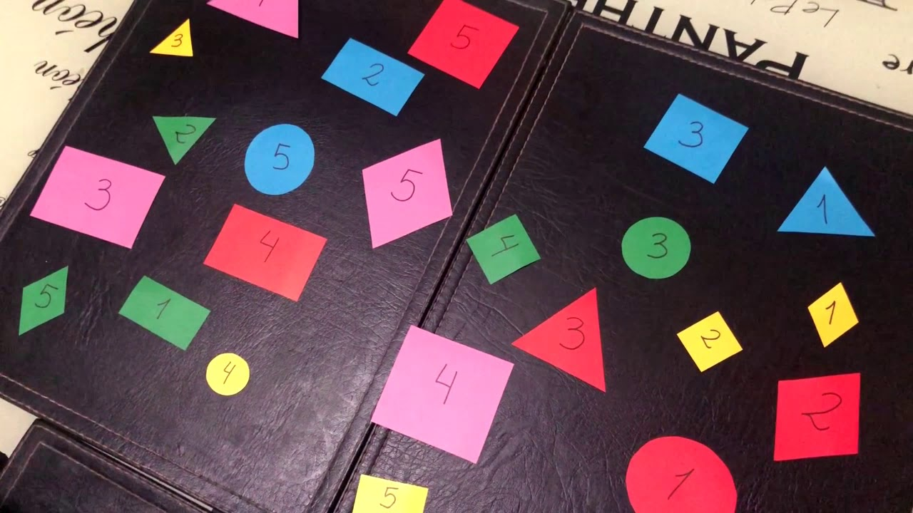
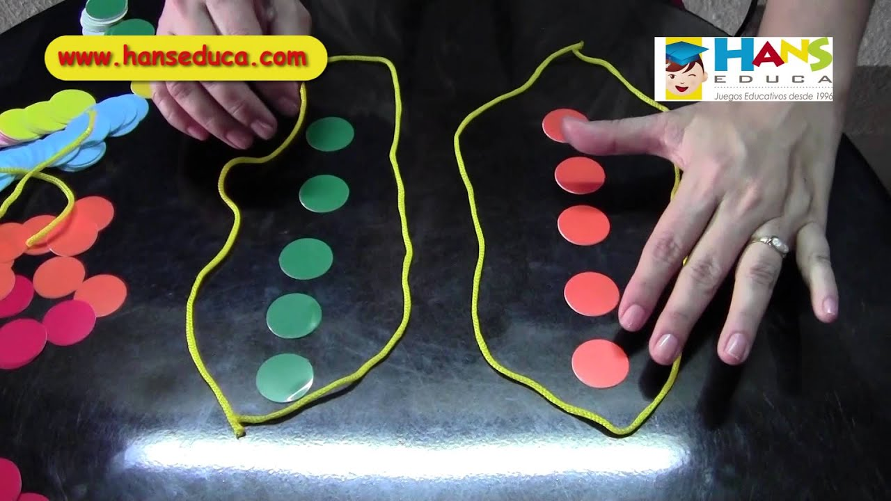

Área Ética
La Ética como Pilar del Desarrollo Integral
Promover una formación ética y moral integral en niños y jóvenes implica definir con claridad el tipo de educación que se desea implementar (Calvo Camelo & Rodríguez Torres, 2021). En este sentido, estos autores resaltan la importancia de una enseñanza centrada en valores, donde la formación ética desde edades tempranas contribuye al fortalecimiento de la convivencia y al desarrollo integral del estudiante.
Siguiendo esta perspectiva teórica sobre la educación en valores, el Colegio María Auxiliadora de Quetzaltenango implementa prácticas pedagógicas centradas en la ética, adaptadas a la realidad y necesidades de sus estudiantes. Así, el colegio fomenta no solo el desarrollo académico, sino también la formación integral para la vida, promoviendo en cada estudiante la responsabilidad, el respeto y el compromiso con su entorno.
La maleta de problemas
Desarrollo Ético
Grado: 4.º a 6.º de primaria
Objetivo: Reflexionar sobre los problemas cotidianos y cómo afectan decisiones y comportamientos.
Motivación: Se presenta al grupo que cada uno lleva consigo una “maleta” simbólica llena de problemas y preocupaciones. Al compartir y reflexionar sobre estos problemas, los estudiantes reconocerán la importancia de tomar decisiones éticas que mejoren su bienestar personal y los conviertan en ciudadanos responsables.
7 juegos divertidos para no aburrirse en casa
Desarrollo Ético
Grado: 1.º a 3.º de primaria
Objetivo: Fomentar actividades en casa para mejorar la comunicación.
Motivación: Los niños disfrutarán en casa ejercitando dinámicas que les permitan divertirse mientras practican valores como el respeto, la cooperación y la responsabilidad.
Duelo del Tangram
Desarrollo Ético
Grado: 4.º a 6.º de primaria
Objetivo: Fomentar valores como la cooperación y la paciencia a través del uso del juego Tangram, promoviendo el razonamiento ético.
Motivación: Se presentará a los estudiantes un video sobre el juego Tangram para despertar el interés por aprender de manera divertida. A partir del video, se generará una conversación sobre cómo las actividades lúdicas pueden ayudarnos a practicar valores como la tolerancia, el trabajo en grupo y el respeto a las reglas.
Clasificación y seriación
Desarrollo Ético
Grado: 4.º a 6.º de primaria
Objetivo: Promover el respeto hacia el grupo en la resolución de un reto.
Motivación: Se presenta al grupo la idea de que en la vida se enfrentan problemas o “nudos” que no se resuelven solos. Para salir adelante se necesita apoyo, respetar reglas básicas, ser justos y pensar en el bien de todos.
Jugando con conjuntos
Desarrollo Ético
Grado: 4.º a 6.º de primaria
Objetivo: Promover el respeto hacia el grupo en la resolución de un reto.
Motivación: Al igual que en la actividad anterior, se presenta la idea de que los problemas se resuelven mejor cuando se trabaja en equipo, se respetan las reglas y se piensa en el bienestar común.
